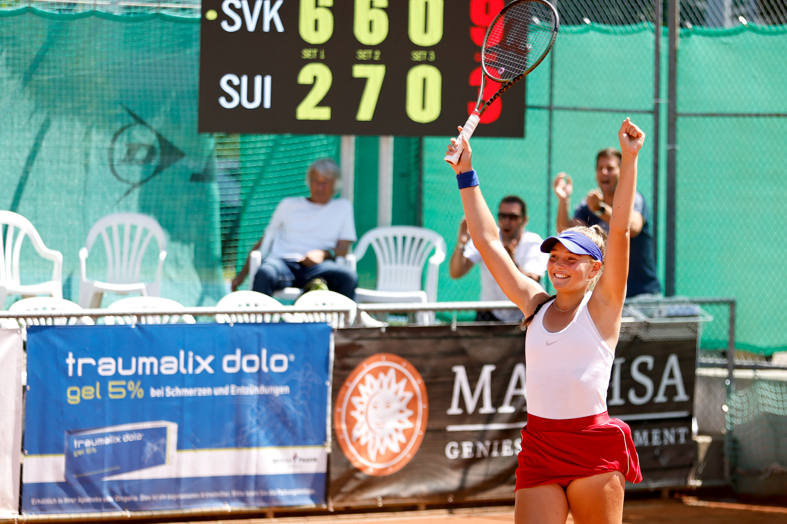
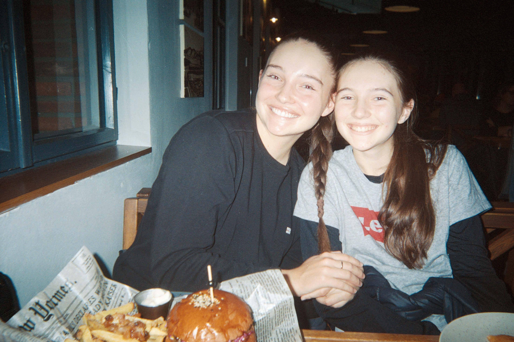

From Slovakia to The Swamp: Niki Daubnerova and the Art of Not Backing Down
Nov. 2, 2025
Over 5,000 miles away from her Slovakian roots, Nikola “Niki” Duabnerova has found a new home in the Gainesville Swamp. She’s traded the cobblestoned European charm of her hometown of Bratislava for the buzz of Gator country—and to say the 19-year-old bleeds orange and blue would be an understatement.
When Tom Petty’s “I Won’t Back Down” blares through Ben Hill Griffin Stadium between the third and fourth quarters, Daubnerova gets goosebumps. For her, that song isn’t just a Florida anthem—it’s a reflection of how she plays, and how she lives.
Ever since she stepped foot on campus during her recruiting visit, Niki knew UF was the place for her. The campus, the girls on the team, the coaches—“it just felt right,” she says, reflecting on her decision.

For someone who grew up in an individual sport, college tennis offered something revolutionary: the chance to play for something bigger than herself. That pride— representing her teammates, her school, and the Gator logo stitched on her shirt—is what fuels Duabnerova.
Her freshman year delivered the kind of moment college tennis players dream about: a 4–3 upset clinch against the ninth-ranked Texas Longhorns. The match on her racket. Everyone watching. Her teammates cheering along the sidelines. Pressure? Sure. But nerves? Not really, she says, shrugging her shoulders.

After all, Daubnerova’s no stranger to big stages. Before college, she reached as high as No. 5 in the world junior rankings. When the match is on the line, she’s the picture of calm—bouncing the ball, adjusting her dampener, touching the pocket of her shorts: a routine she's done thousands of times before.
That type of discipline defines her. She’s the kind of player who voluntarily wakes up for a 5:30 a.m. hot yoga class. The one who runs down every ball, finishes every rep, and shows up an hour early to practice to warm up and take care of her body properly. She’s the teammate who’s first to give you a fist pump when you need it most.
And yet, beneath that intensity lies a softer side. Her heart-shaped green energy stone, a gift from her grandfather, comes with her to every tennis match she goes to. She’s also kept a diary since 2016, full of notes from her first recruiting calls, her first heartbreak, and everything in between. And we can’t forget about her stuffed panda named Stella. At one junior tournament, Stella sat on her bench for every match and Niki ended up winning the whole thing. Coincidence? Maybe. But you best believe that Stella is still in her dorm room and coming with her for every match on the road.
Growing up in Slovakia, Niki first picked up a tennis racket in kindergarten. Her extracurricular teacher spotted her talent instantly. Her parents, though not tennis players, are accomplished athletes too, with her dad being a two-time world veteran champion in beach volleyball. Niki has one younger sister, and the two grew up playing tennis together side by side. What does she miss most about home? “The simple things,” she says. “Watching TV with my sister and relaxing on the couch.” One time, the two got to team up in a local doubles together she recounts with a heartfelt smile.

Gratitude and perseverance: Two words that anchor her. “It’s never over until it’s over,” Niki says. “In tennis, in life—everything.” After several serious injuries that forced her to the sidelines, that perspective means more than ever. To Daubnerova, every moment on court is a gift and something she is sure not to take for granted.
After a big win or a tough week of practice, her favorite way to unwind and relax is nothing elaborate: listening to music, quiet nights with friends, speaking with her family back home, and maybe something sweet. “Anything pistachio-flavored,” she says, laughing. “And lava cake. I’d kill for a good lava cake.”
As she enters her sophomore season as a Gator, Daubnerova’s mission remains simple: compete, grow, and keep writing her diary—page by page, match by match. Because for Niki, both the match and the story are far from over.